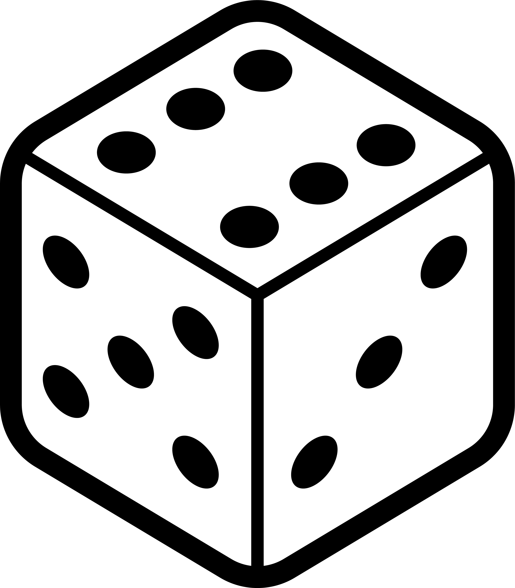

2 Statistical Distributions
2.1 Why distributions?
2.2 Types of data

- Nominal Data:
- Description: Nominal data represents categories with no inherent order or ranking.
- Examples: Colors, gender, or types of fruits.
- Characteristics: Categories are distinct, but there is no meaningful numerical value associated.
- Ordinal Data:
- Description: Ordinal data has categories with a meaningful order or ranking, but the intervals between them are not consistent or measurable.
- Examples: Educational levels (e.g., high school, bachelor’s, master’s), customer satisfaction ratings (e.g., low, medium, high).
- Characteristics: The order is significant, but the differences between categories are not precisely quantifiable.
- Discrete Data:
- Description: Discrete data consists of separate, distinct values, often counted in whole numbers and with no intermediate values between them.
- Examples: Number of students in a class, number of cars in a parking lot.
- Characteristics: The data points are distinct and separate; they do not have infinite possible values within a given range.
- Continuous Data:
- Description: Continuous data can take any value within a given range and can be measured with precision.
- Examples: Height, weight, temperature.
- Characteristics: Values can be any real number within a range, and there are theoretically infinite possible values within that range.
2.2.1 Nominal Data

Nominal data is a type of data that represents categories or labels without any specific order or ranking. These categories are distinct and non-numeric. For example, colors, types of fruits, or gender (male, female, other) are nominal data. Nominal data can be used for classification and grouping, but mathematical operations like addition or subtraction do not make sense in this context.
2.2.2 Ordinal Data

Ordinal data represents categories that have a specific order or ranking. While the categories themselves may not have a consistent numeric difference between them, they can be arranged in a meaningful sequence. A common example of ordinal data is survey responses with options like “strongly agree,” “agree,” “neutral,” “disagree,” and “strongly disagree.” These categories indicate a level of agreement, but the differences between them may not be uniform or measurable.
2.2.3 Discrete Data

Discrete data consists of distinct, separate values that can be counted and usually come in whole numbers. These values can be finite or infinite, but they are not continuous. Examples include the number of students in a class, the count of cars in a parking lot, or the quantity of books in a library. Discrete data is often used in counting and can be represented as integers.
One quote in the literature about discrete data, shows how difficult the classification of data types can become (J. Bibby (1980)): “… All actual sample spaces are discrete, and all observable random variables have discrete distributions. The continuous distribution is a mathematical construction, suitable for mathematical treatment, but not practically observable. …”
2.2.4 Continous Data
Continuous data encompasses a wide range of values within a given interval and can take on any real number. There are infinite possibilities between any two points in a continuous dataset, making it suitable for measurements with high precision. Examples of continuous data include temperature, height, weight, and time. It is important to note that continuous data can be measured with decimals or fractions and is not limited to whole numbers.
2.3 Uniform Distribution
2.3.1 Dice


2.3.2 Types of uniform distributions
- All outcomes in the range are equally probable
- The “range” can be:
- a finite set of values (discrete)
- a continuous interval (continuous)
\[\begin{align} X \sim \mathrm{Uniform}(a,b) \text{ continuous}\\ X \sim \mathrm{Uniform}\{a,a+1,\ldots,b\} \text{ discrete} \end{align}\]
2.3.3 Core properties
Core Properties: Discrete vs. Continuous Uniform Distributions |
||
|---|---|---|
Equal probability everywhere, but for different types of data |
||
Property |
Discrete Uniform |
Continuous Uniform |
Probability |
Equal for each outcome. |
Equal density over the interval. |
Symmetry |
Mean = midpoint of the range. |
Mean = midpoint of the interval. |
Intuition |
‘Fair die’ with n sides. |
‘Fair spinner’ on a line segment. |
Use Cases |
Counting problems (e.g., dice, cards). |
Measuring problems (e.g., time, space). |
Note: Both distributions share the ‘fairness’ property but apply to different data types. |
||